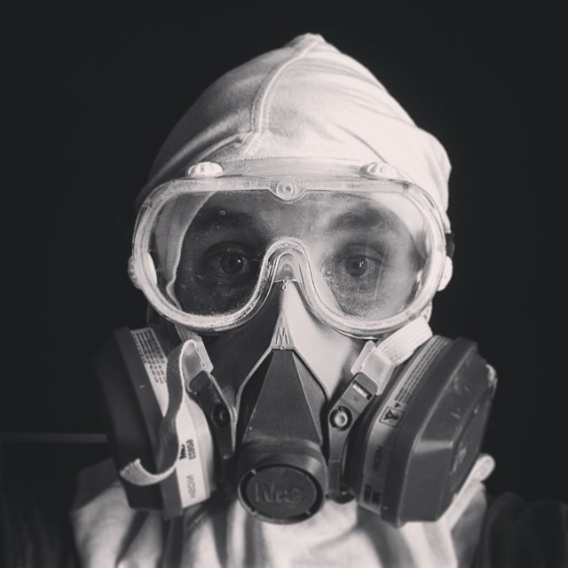

More recently, however, I spend most of my time studying. A few years ago, I went back to school, and am currently enrolled at Stanford University in a program for electrical engineering.
Before transfering into Stanford, I was studying at a community college in Santa Monica while also running a recording studio. Prior to that, I was mostly on the road touring in support of various recordings.
Some of the instruments that I play proficiently include: